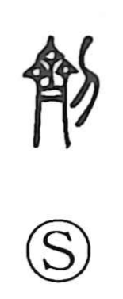

剤

Uncategorized
Kun: | On: zai
medicine ・ drug ・ dose ・ preparation ・ tally ・ contract
Explanation
Shirakawa explains the original form 劑 as a compound of 齊 (here an abbreviation of 齋, standing for a square bronze ding vessel) and 刀, the knife. 齊 names the ritual vessel that bore formal inscriptions, while 刀 indicates the act of carving words into its side. From this, 劑 first meant to cut an inscription on a bronze tripod to seal an agreement, and by extension the inscribed agreement itself—the contract, its document, or the tally used to authenticate a deal. The Rites of Zhou describes such market procedures in which transactions were fixed by carvings on a bronze ding. Later the sense shifted to prepared mixtures, giving the modern meanings “medicine,” “dose,” and related pharmaceutical agents.